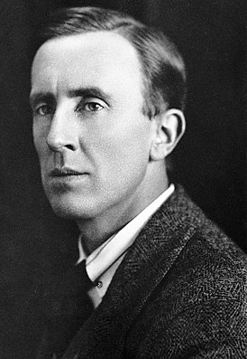
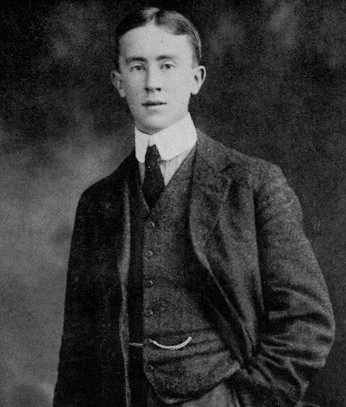
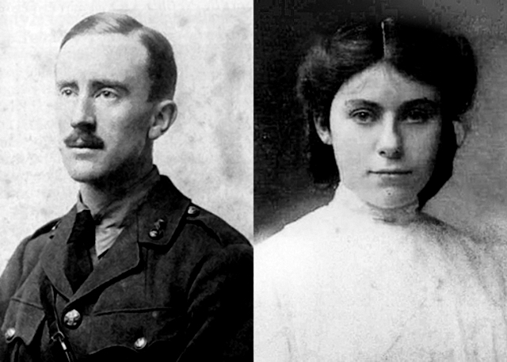
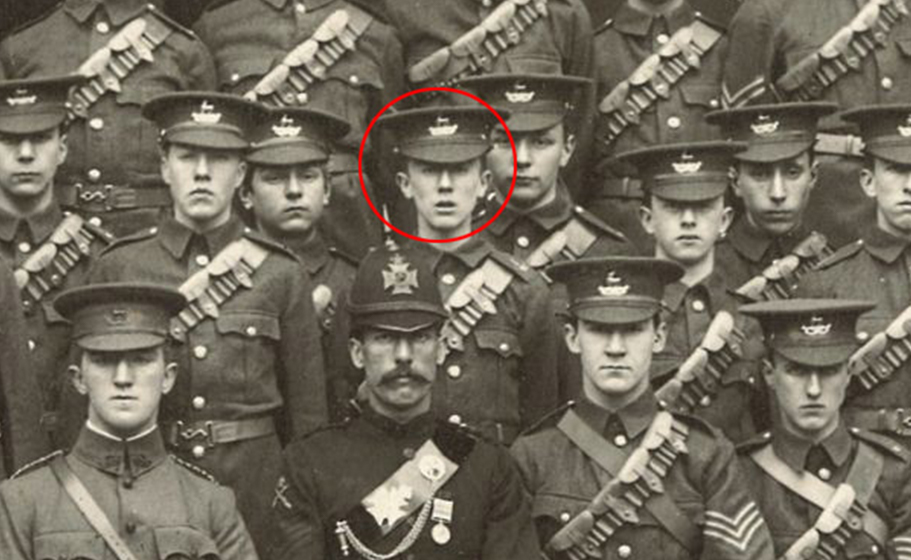
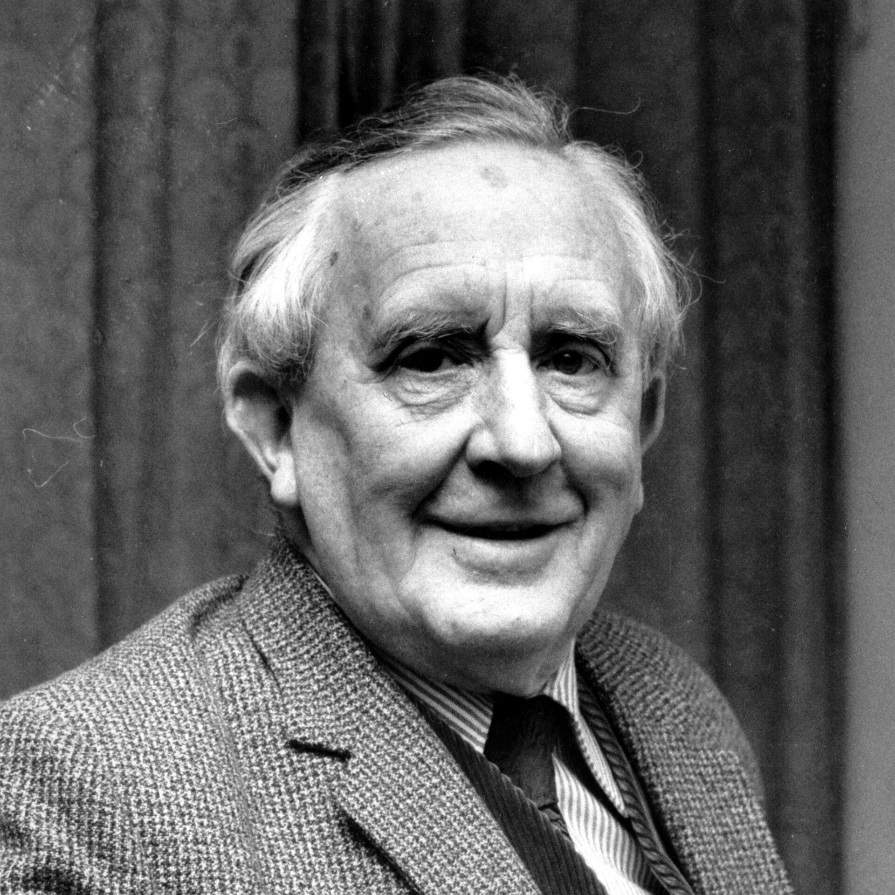
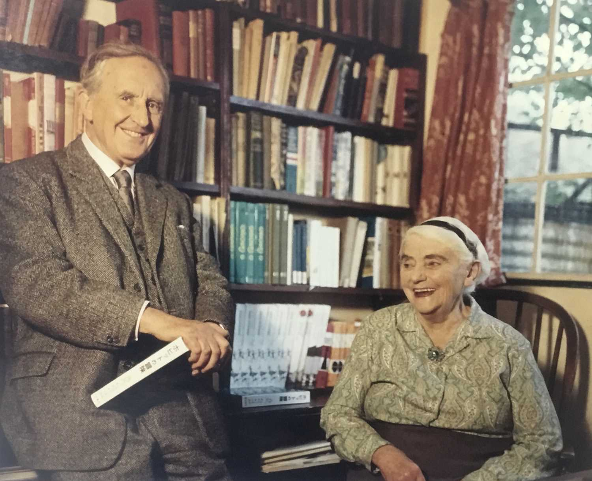

 Ջոն Ռոնալդ Ռուել Թոլքին (անգլ. John Ronald Reuel Tolkien)։ Անգլիացի հանրաճանաչ գրող և բանաստեղծ, և բանասեր։ Անգլիացի հանրահռչակ գրող և բանասեր, թարգմանիչ և լեզվաբան։ Օքսֆորդի համալսարանի պրոֆեսոր, որտեղ նա դասավանդել է անգլոսաքսոնական լեզուներ (1925-1945), այնուհետև՝ անգլերեն լեզու և գրականություն (1945-1959)։ 1972 թ մարտի 28-ին Թոլքինին շնորհվել է Բրիտանական կայսրության կոմանդորի կոչում։ Գրել է հիմնականում ֆենթեզի ժանրում։ Նա առավել հայտնի է որպես «Հոբիթ», «Մատանիների տիրակալը» և «Սիլմարիլիոն» գրքերի հեղինակ: Այս գրքերը թարգմանվել են հարյուրավոր լեզուներով, կատարվել են ընդօրինակումներ, ստեզծվել են շարունակություններ և ադապտացիաներ։ 2008 թվականին բրիտանական The Times թերթը նրան դասում է «1945 թվականից ի վեր 50 մեծագույն բրիտանացի գրողների» ցուցակի երրորդ տեղում։ «Մատանիների տիրակալը» երկրորդ համաշխարհային պատերազմից հետո անգլերենով գրված ամենահանրաճանաչ գրքերից մեկն է։ 1968 թվականին անգլախոս աշխարհում եռագրությունը կարդացել էր 50 միլիոնից ավելի մարդ։ 2003 թվականին բրիտանական BBC ինտերնետային և հեռուստառադիոընկերության հարցումների համաձայն 200 լավագույն գրքերի ցուցակում առաջին տեղը գրավել է «Մատանիների տիրակալը» գիրքը։ Թոլքինը ունի բազմաթիվ հետևորդներ։ Ամբողջ աշխարհում բազմաթիվ հեղինակներ խոստովանում են Թոլքինի ազդեցությունը իրենց ստեղծագործության վրա։ Նրանցից կարելի է նշել Ջոան Ռոուլինգին՝ «Հարրի Փոթերի» հեղինակին և սանկտ-պետերբուրգցի գրող, Նիկ Պերումովին (Փիրումյան), որի վեպերում իրադարձությունները կատարվում են «Մատանիների տիրակալից» 300 տարի անց։
Կենսագրություն
.1. Մանկություն
Ջոն Ռոնալդ Ռուել Թոլքինը ծնվել է 1892 թվականի հունվարի 3-ին Բլումֆոնտեյնում, Նարնջագույն Հանրապետությունում (այժմ՝ Հարավաֆրիկյան Հանրապետություն)։ Նրա ծնողները՝ Արթուր Ռուել Տոլքինը (1857–1896), անգլիական բանկի ղեկավար, և Մեյբել Թոլքինը (1870–1904), ժամանել էին Հարավային Աֆրիկա՝ իրենց որդու ծնվելուց կարճ ժամանակ առաջ՝ կապված Արթուրի իր կարիերայի առաջխաղացման հետ։ 1894 թվականի փետրվարի 17-ին ծնվում է նրա եղբայրը՝ Հիլարի Արթուր Ռուելը։ 1896 թվականին մայրը՝ Մեյբելը իր երեխաների հետ վերադարնում է Անգլիա, իսկ հայրը՝ Արթուրը մնում է Աֆրիկայում։ Սակայն այդ տարվա փետրվարին Արթուրը ռևմատիկ տենդից մահանում է։ Երկու երեխաների հետ մենակ մնալով՝ Մեյբելը իր ընտանիքի հետ հաստատվում է Բիրմինգհեմի մոտ գտնվող Սեյրհոլ քաղաքում: Կյանքում հենակետ գտնելու համար Մեյբելը խորասուզվում է կրոնի մեջ, ընդունելով կաթոլիկություն (դա հանգեցնում է իր անգլիկան ազգականների հետ վերջնական խզման)։ Նա իր երեխաներին համապատասխան կրթություն է տալիս արդյունքում Թոլքինն իր ողջ կյանքի ընթացքում մնում է խորապես կրոնասեր մարդ: Թոլքինի ուժեղ կրոնական համոզմունքները նշանակալի դեր են խաղում Քլայվ Լյուիսի՝ քրիստոնեությունը ընդունելու գործում, թեև ի վրդովմունք Թոլքինի՝ Լյուիսն ընտրում է անգլիկան հավատքը կաթոլիկ հավատքի փոխարեն։ Մեյբելը նաև որդուն սովորեցնում է լատիներեն լեզվի հիմունքները, ինչպես նաև սեր է սերմանել բուսաբանության նկատմամբ։ Չորս տարեկանում մոր ջանքերի շնորհիվ փոքրիկ Ռոնալդն արդեն գիտեր կարդալ և նույնիսկ գրել առաջին տառերը։ Նա շատ էր կարդում։ Նրան հենց սկզբից դուր չէին գալիս Սթիվենսոնի <Գանձերի կղզին> և Գրիմ եղբայրների <Համելնյան մկնորս> գրքերը, բայց հավանում էր Լուիս Քերոլի <Ալիսը Հրաշքների աշխարհում> գիրքը: Թոլքինի մայրը մահանում է շաքարախտից 1904 թվականին, 34 տարեկան հասակում։ Մահից առաջ նա իր խոստովանահայր Ֆրենսիս Մորգանին, ով Օրատորների միաբանության քահանա էր, խնդրում է իր երեխաների խնամակալը դարձրնալ: Ֆրենսիս Մորգանն էր, ով փոքրիկ Ռոնալդի մոտ զարգացրեց բանասիրության նկատմամբ հետաքրքրությունը, ինչի համար Թոլքինը հետագայում շատ շնորհակալ էր Ֆրենսիսին։ 1900 թվականին Թոլքինը ընդունվում է Էդվարդ թագավորի դպրոց, որտեղ նա սովորում է հին անգլերեն և սկսում սովորել այլ լեզուներ՝ ուելսերեն, հին սկանդինավյան լեզուներ, ֆիններեն, գոթերեն: Նրա լեզվական տաղանդը շատ վաղ է հայտնաբերվում։ Նա հին ուելսերեն և ֆիններեն լեզուներն ուսումնասիրելուց հետո սկսում է հորինել «էլֆական» լեզուներ (իր ողջ կյանքի ընթացքում Թոլքինը սովորում է 14 լեզու և հորինում 19-ը): Այնուհետև նա հաճախում է Օքսֆորդի Սուրբ Ֆիլիպի դպրոց և Էքսեթեր քոլեջ:
.2. Երիտասարդություն
 1911 թվականին Բիրմինգհեմ քաղաքում Էդվարդ թագավորի դպրոցում սովորելիս, Թոլքինը իր երեք ընկերների հետ՝ Ռոբ Գիլսոնի, Ջեֆրի Սմիթի և Քրիստոֆեր Ուայզմանի հետ կազմակերպում են կիսագաղտնի խմբակ որը կոչվում էր {T.C.B.S. «Tea Club and Barrovian Society»): Այս անունը պայմանավորված է նրանով, որ ընկերները սիրում էին թեյ խմել, որը վաճառվում էր դպրոցի մոտ Barrow մարկետում։ Նույնիսկ դպրոցը թողնելուց հետո խմբակի անդամները կապ են պահպանում միիմյանց հետ, օրինակ՝ նրանք հանդիպել են 1914 թվականի դեկտեմբերին Լոնդոնում՝ Ուայզմանի տանը։ 1911 թվականի ամռանը Թոլքինը մեկնում է Շվեյցարիա, հետագայում նա նշում է 1968 թվականի նամակում՝ որ Բիլբո Բեգինսի ճանապարհորդությունը Մառախլապատ լեռներով հիմնված էր Թոլքինի և նրա տասներկու ուղեկիցների Ինտերլակենից Լաուտերբրունեն կատարած ճանապարհորդության վրա։ Նույն թվականի հոկտեմբերին նա սկսում է իր ուսումը Օքսֆորդի համալսարանում:
.3. Թոլքինի ընտանիքը
 1908 թվականին նա ընկերանում է Էդիթ Մերի Բրեթի հետ, որը նույնպես որբ էր, ով իր տան հարևանուհին էր։ Սիրահարվելը խանգարեց Թոլքինին անմիջապես քոլեջ գնալ, բացի այդ, Էդիթը բողոքական եկեղեցու հետևորդ էր և նրանից երեք տարով մեծ։ Հայր Ֆրանցիսկոսն ընդունում է Ռոնալդի երդման խոսքը, որ ինքը Էդիտի հետ չի հանդիպի մինչև 21 տարեկան դառնալը, այսինքն՝ մինչև մեծահասակ լինելը, երբ հայր Ֆրանցիսկոսը կդադարեր լինել նրա խնամակալը: Թոլքինը կատարեց իր խոստումը` մինչև այդ տարիքը ոչ մի տող չգրելով Մերի Էդիթին: Նրանք նույնիսկ չեին հանդիպում և չեին խոսում։ Նույն օրը երեկոյան, երբ Թոլքինը դարձավ 21 տարեկան, նա նամակ է գրում Էդիթին, որտեղ նա հայտարարում է իր սիրո մասին և խնդրում իր ձեռքն ու սիրտը։ Էդիթը պատասխանում է որ արդեն համաձայնել է ամուսնանալ այլ անձի հետ, քանի որ որոշել էր, որ Թոլքինը վաղուց մոռացել է իրեն։ Նա ի վերջո վերադարձնում է նշանադրության մատանին իր փեսային և հայտարարում, որ ամուսնանում է Թոլքինի հետ։ Բացի այդ նա ընդունել է կաթոլիկությունը։ Նշանադրությունը տեղի է ունենում 1913 թվականի հունվարին Բիրմինգհեմում, իսկ հարսանիքը տեղի է ունենում 1916 թվականի մարտի 22-ին անգլիական Ուորվիք քաղաքում՝ Սուրբ Մարիամ կաթոլիկ եկեղեցում: Զույգը միասին ապրեց 56 տարի և մեծացրեց չորս երեխա՝ երեք որդի՝ Ջոն Ֆրենսիս Ռուել Թոլքին (1917), Մայքլ Հիլարի Ռուել Թոլքին (1920), Քրիստոֆեր Ռուել Թոլքին (1924), և դուստր Պրիսցիլա Մերի Ռուել Թոլքին (1929):
.4. Կարիերան և առաջին համաշխարհային պատերազմը
1914 թվականին Թոլքինը ընդունվում է Զինվորական ուսումնական կորպուս, որպեսզի հետաձգի զորակոչը և ավարտի բակալավրի աստիճանը։ 1915 թվականին Թոլքինը գերազանցությամբ ավարտում է համալսարանը և գնում Լանկաշիր Ֆուզիլիերզում ծառայելու որպես լեյտենանտ։ Շուտով Թոլքինը կանչվում է ռազմաճակատ և մասնակցում Առաջին համաշխարհային պատերազմին։ Թոլքինը վերապրում է Սոմմի արյունալի ճակատամարտը , որտեղ մահանում են T.C.B.S. խմբակի նրա երկու լավագույն ընկերները, որից հետո նա սկսում է ատել պատերազմը։ Հիվանդանում է խրամատային տենդով և երկար բուժումից հետո ուղարկվում տուն։  Հետևյալ տարիները նա նվիրել է գիտական կարիերայն։ Սկզբում դասավանդում է Լիդսի համալսարանում։ 1922 թվականին Օքսֆորդի համալսարանում ստանում է անգլո-սաքսոնական լեզվի և գրականության պրոֆեսորի պաշտոնը, որտեղ դարնում է ամենաերիտասարդ պրոֆեսորներից մեկը (30 տարեկան):ԵՎ շուտով ձեռք է բերում աշխարհի լավագույն բանասերներից մեկի համբավը։ Այդ ժամանակ նա սկսում է գրել ՄիջԵրկրի մասին առասպելների և լեգենդների ցիկեր, որը հետագայում դառնում է «Սիլմարիլիոն» գիրքը։ Նրա ընտանիքում չորս երեխա կար, նա նրանց համար էր սկզբում հորինում ու պատմում։ Ապա ձայնագրում է «Հոբիթ» գիրքը, որը հետագայում 1937 թվականին հրատարակվում է սըր Սթենլի Անուինի կողմից։ «Հոբիթ»-ը մեծ հաջողություն է ունենում, և Անուինը առաջարկում է Թոլքինին գրել շարունակություն։ Այնուամենայնիվ, շարունակությունը երկար է ձգձգվում, և գիրքը տպագրվում է միայն 1954 թվականին, երբ Թոլքինը պատրաստվում էր թոշակի անցնել: Գիրքը անձամբ Անուինին շատ էր դուր գալիս, նա շատ էր ցանկանում հրատարակել իր ընկերոջ աշխատանքը բայց վախենում էր որ զգալի գումարներ կկորցնի։ Տպագրության ծախսերը խնայելու համար գիրքը բաժանում են երեք մասի։ «Մատանիների տիրակալը» ստեղծագործությունը լույս է տեսնում և մեծ հաջողություն է ունենում, ինչը զարմացնում է և՛ հեղինակին, և՛ հրատարակչին։
.5. Երկրորդ համաշխարհային պատերազմ
Երկրորդ համաշխարհային պատերազմի սկզբում Թոլքինին դիտարկում էին որպես գաղտնագրման գլխավոր ապակոդավորիչի պաշտոնում։ 1939 թվականի հունվարին նրան հայտնում են արտակարգ իրավիճակի դեպքում արտաքին գործերի նախարարության գաղտնագրման բաժնում ծառայելու հնարավորության մասին։ Նա համաձայնվում է և դասընթացի է մասնակցում կառավարական հաղորդակցության կենտրոնի Լոնդոնի կենտրոնակայանում: Ինչ էլ որ լինի, թեև Թոլքինը բավականին խելամիտ մարդ էր գաղտնազերծող դառնալու համար, սակայն հոկտեմբերին նրան տեղեկացնում են, որ իր ծառայություններն առայժմ կառավարությանը պետք չեն: 2009 թվականին «The Daily Telegraph»-ը հայտնում է, որ Թոլքինը, ինչ-ինչ անհայտ պատճառներով, մերժել է տարեկան 500ֆունտ ստեռլինգ աշխատավարձով իրենց մոտ աշխատանքի ընդունվելու առաջարկը։ Չնայած Թոլքինը ատում էր Ադոլֆ Հիտլերին և նացիզմը, նա սարսափած էր դաշնակիցների կողմից Գերմանիայի ռմբակոծությունից: Այս մասին 1945 թվականին Թոլքինը գրել է իր որդուն՝ Քրիստոֆերին ով այդ ժամանակ գտնվում էր Եվրոպայում՝ անգլիական բանակում։
.6. Պատերազմից հետո. Թոլքինյան բումը
 1948 թվականին Թոլքինը ավարտում է աշխատանքը «Մատանիների տիրակալը» գրքի վրա։ Թոլքինի ծրագրի համաձայն՝ «Սիլմարիլիոնը» պետք է հրատարակվեր «Մատանիների տիրակալի» հետ միաժամանակ, սակայն հրատարակչությունը դրան դրական գնահատական չտվեց։ 1960-ականների սկզբին «Մատանիների տիրակալը» Թոլքինի թույլտվությամբ Ballantine Books-ի կողմից թողարկվեց միացյալ Նահանգներում և մեծ առևտրային հաջողություն ունեցավ։ 1960-ականների երիտասարդությունը, տարված հիպիական շարժումով և խաղաղության ու ազատության գաղափարներով, գրքում գտնում են իրենց երազանքներից շատերի մարմնավորումը։ 1960-ականների կեսերին «Մատանիների տիրակալը» իսկական բում ապրեց: Ինքը՝ հեղինակը, խոստովանել է, որ հաջողությունը պատահաբար է շոյել իրեն։ Նա գրում էր որ այնքան է հոգնել երկրպագուներից որ նույնիսկ ստիպված է եղել փոխել հեռախոսահամարները, քանի որ նրանք զանգերով անհանգստացնում էին նրան։ 1961 թվականին Քլայվ Ս. Լյուիսը առաջ էր քաշում Թոլքինին գրականության Նոբելյան մրցանակ հանձնելու գազափարը։ Սակայն շվեդ ակադեմիկոսները մերժում են առաջադրումը` այն ձևակերպմամբ, որ Թոլքինի գրքերը «ոչ մի կերպ չեն կարող անվանվել առաջին կարգի ստեզծագործություն»: Այդ տարի մրցանակը ստանում է հարավսլավիացի գրող Իվո Անդրիչը։
.7. Մահ
 1971 թվականին կնոջ մահից հետո Թոլքինը վերադարնում է Օքսֆորդ։ 1972 թվականի վերջին նա տառապում էր մարսողության խանգարումներից, ռենտգենը ցույց է տալիս դիսպեպսիա։ Բժիշկները նրան դիետա են նշանակում և պահանջում, որ ամբողջովին վերացնի գինու օգտագործումը։ 1973 թվականի օգոստոսի 28-ին Թոլքինը գնում է Բորնմութ՝ հին ընկերոջ՝ Դենիս Թոլհերսթի մոտ։ Օգոստոսի 30ին, նա մասնակցում է Տիկին Թոլհըրսթի տարեդարձին։ Գիշերը վատանում է, իսկ առավոտյան Թոլքինին տեղափոխում են մասնավոր կլինիկա, որտեղ նրա մոտ հայտնաբերում են ստամոքսի արյունահոսություն։ Չնայած ի սկզբանե լավատեսական կանխատեսումներին 1973 թվականի սեպտեմբերի 2-ի կիրակի գիշերը Ջոն Ռոնալդ Ռուել Թոլքինը մահացավ 81 տարեկանում: Ամուսիններին թաղում են նույն գերեզմանում։ 1973 թվականից հետո հրատարակված բոլոր աշխատանքները, ներառյալ «Սիլմարիլիոնը», հրատարակվել է նրա որդու՝ Քրիստոֆերի կողմից։